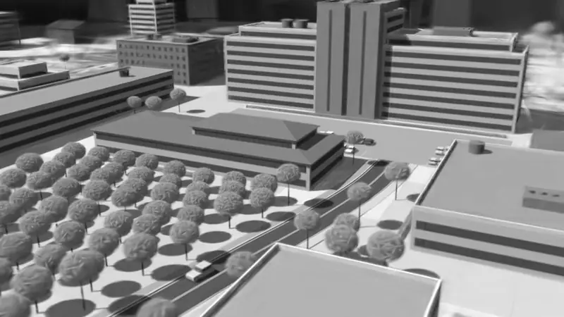
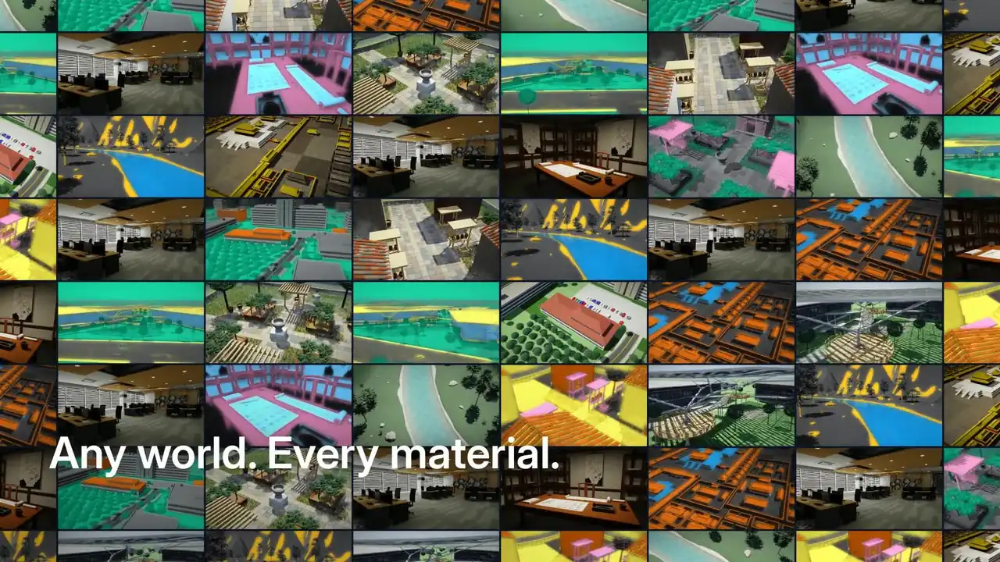

Spectral World Renderer: Unified 3D Hyperspectral Unmixing
- 1 University at Albany, State University of New York
- 2 National Yang Ming Chiao Tung University
- 3 National Cheng Kung University
Preprint · under review預印本 · 審稿中
SWR is a material-aware explicit representation that unifies 3D spectral reconstruction and unmixing. A Gaussian scaffold fitted from RGB decodes each ray–Gaussian intersection into abundances over a shared endmember dictionary, so the same visibility weights render spectra and material maps from any view.SWR 是一種具材質感知的顯式表示，將三維光譜重建與解混統一於同一框架。以 RGB 擬合的高斯骨架將每個光線與高斯的交點解碼為共享端元字典上的豐度，因此同一組可見度權重可在任意視角渲染光譜與材質圖。
- 8 / 8worlds with the best material identification (mIoU)個世界的材質辨識（mIoU）皆為最佳
- 6 min 37 scomplete City pipeline, from RGB anchor to decoderCity 完整流程，從 RGB 錨點到解碼器
- 34.9joint spectral and label views per second at 960 × 540 × 64每秒聯合渲染的光譜與標籤視角數（960 × 540 × 64）
- ≥ 3.67×faster training than the unmixing baselines on CityCity 上相較解混基線的訓練加速
01 / Overview概覽
What a surface is made of, not only how it looks表面由什麼構成，而不只是看起來如何
Query any surface by name, click, spectrum, band or combination, and verify the answer against the known composition. Try the material queries →可依名稱、點選、光譜、波段或其組合查詢任一表面，並以已知組成驗證答案。試用材質查詢 →
Material identification across SWR-Bench worlds. Input: multi-view hyperspectral images from generated worlds with known composition (left). Representation: Gaussians with material abundances and spectra. Queries: a material name mapped from labelled training views, a clicked pixel (crosshair), a reference spectrum, a near-infrared spectral index or a combination. Tiles show selections on test views.SWR-Bench 各世界的材質辨識。輸入：來自組成已知之生成世界的多視角高光譜影像（左）。表示：帶有材質豐度與光譜的高斯。查詢：由已標註訓練視角對應的材質名稱、點選的像素（十字準星）、參考光譜、近紅外光譜指數或其組合。各圖塊為測試視角上的選取結果。
Agentic benchmark with known composition組成已知的代理式基準
An agentic pipeline builds SWR-Bench, indoor and outdoor worlds rendering multi-view HSI from measured spectra with aligned material labels and proportions.代理式流程建構 SWR-Bench：由實測光譜渲染多視角高光譜影像的室內與室外世界，並附有對齊的材質標籤與比例。
Material-aware explicit representation具材質感知的顯式表示
Compact Gaussian features predict local abundances at each ray–Gaussian intersection before alpha compositing. Shared visibility weights render spectra and material maps, keeping mixtures queryable on primitives across viewpoints.精簡的高斯特徵在 alpha 合成之前，於每個光線–高斯交點預測局部豐度。共用的可見度權重同時渲染光譜與材質圖，使混合成分在各視角下皆可於基元上查詢。
Appearance-guided material allocation外觀引導的材質分配
Multi-view spectral-shape and brightness clusters guide abundance assignments without a material-label fitting loss, improving the separation of materials with similar spectral shapes.多視角的光譜形狀與亮度聚類引導豐度分配，無需材質標籤擬合損失，改善光譜形狀相近之材質的分離。
Abstract摘要
Hyperspectral images (HSI) preserve material evidence lost in RGB, yet 3D material identification from multi-view HSI faces two obstacles. Spectral Gaussian splatting reconstructs spectra accurately but leaves unmixing to per-pixel post-processing, while multi-view hyperspectral capture is costly and real datasets lack pixel-level material labels and sub-pixel proportions. We propose Spectral World Renderer (SWR), a material-aware explicit representation that unifies 3D spectral reconstruction and unmixing: it fits a Gaussian scaffold from RGB and decodes ray–Gaussian intersections into abundances over a shared endmember dictionary. Additionally, appearance guidance prevents spectrally similar materials from merging when intensity absorbs their brightness differences. Moreover, SWR requires no material-label supervision during training. To address the data gap, we further construct the SWR Benchmark (SWR-Bench): a coding-agent pipeline generates eight indoor and outdoor worlds from measured reflectance, aligning HSI with both annotations. SWR achieves the highest mIoU in all eight worlds and the highest mean PSNR on each real dataset. On an 11-class urban world, it trains at least 3.67× faster than unmixing baselines; rendering averages 34.9 joint spectral and label views/s over four worlds on a single RTX 4090.
高光譜影像（HSI）保留了 RGB 中遺失的材質證據，然而從多視角 HSI 進行三維材質辨識面臨兩項障礙。光譜高斯潑濺能準確重建光譜，卻將解混留給逐像素的後處理；同時，多視角高光譜擷取成本高昂，且真實資料集缺乏像素級材質標籤與次像素比例。我們提出 Spectral World Renderer（SWR），一種具材質感知、統一三維光譜重建與解混的顯式表示：它從 RGB 擬合高斯骨架，並將光線–高斯交點解碼為共享端元字典上的豐度。此外，當強度吸收了亮度差異時，外觀引導可防止光譜相近的材質被合併。SWR 在訓練期間亦不需要材質標籤監督。為彌補資料缺口，我們進一步建構 SWR Benchmark（SWR-Bench）：以編碼代理流程從實測反射率生成八個室內與室外世界，使 HSI 與上述兩種標註對齊。SWR 在全部八個世界中取得最高的 mIoU，並在每個真實資料集上取得最高的平均 PSNR。在一個 11 類的城市世界中，其訓練速度至少為解混基線的 3.67 倍；在單張 RTX 4090 上，四個世界的平均渲染速度為每秒 34.9 個聯合光譜與標籤視角。
02 / Material queries材質查詢
Query any material查詢任何材質
Every Gaussian carries abundances and a spectrum, so a query is a selection over primitives, consistent across views. Pick a world, choose a query and drag the divider to compare the RGB rendering (left) with the result (right).每個高斯都帶有豐度與光譜，因此查詢即是對基元的選取，且在各視角間保持一致。請選擇世界與查詢，並拖動分隔線比較 RGB 渲染（左）與查詢結果（右）。
World世界
Query查詢
a material, e.g. fired clay or water指定一種材質，例如 fired clay 或 water
of names, e.g. stone ∨ travertine多個名稱的組合，例如 stone ∨ travertine
a shaded pixel: the sunlit parts of the same material are retrieved too點選陰影中的像素：同一材質受日照的部分也會一併取回
from a library, e.g. a living leaf取自光譜庫，例如活體葉片
or spectral index, e.g. near-infrared或光譜指數，例如近紅外
Abundances come from SWR models trained without material labels. A name query sums the abundances of the endmembers assigned to the class through a frozen training-view map, on a fixed 0–1 scale, and a combination sums two classes. Click, spectrum and index queries compare the spectrum of every Gaussian with the clicked spectrum, a library reflectance or a band index under a fixed threshold. These clips are illustrative; quantitative results are reported below and in the paper.豐度來自未使用材質標籤訓練的 SWR 模型。名稱查詢透過凍結的訓練視角對應關係，加總指派給該類別之端元的豐度，並以固定的 0–1 刻度呈現；組合查詢則加總兩個類別。點選、光譜與指數查詢在固定閾值下，將每個高斯的光譜與點選的光譜、光譜庫反射率或波段指數相比較。這些片段僅供示意，定量結果見下文與論文。
Seeing beyond RGB超越 RGB

 RGB847 nm
RGB847 nm
Stills from one camera path, rendered by SWR. Left: visible composite near 630 / 550 / 460 nm from the learned spectra. Right: a single band; both band views share one fixed exposure, so brightness is comparable between wavelengths. In the near-infrared, vegetation reflects strongly, whereas most building materials do not.取自同一相機路徑、由 SWR 渲染的畫面。左：由學得光譜合成、約 630 / 550 / 460 nm 的可見光影像。右：單一波段；兩個波段視圖共用同一固定曝光，因此不同波長間的亮度可直接比較。在近紅外波段，植被反射強烈，而多數建築材料則否。
Living leaves differ from materials of the same colour beyond the visible range: chlorophyll absorbs red light and leaf tissue reflects near-infrared light, producing a red edge near 700 nm that minerals and dry leaves lack. In City, foliage-coloured mineral leaves are only 2° from foliage in RGB but 42° apart in spectrum, so they receive endmembers of their own.活體葉片與同色材質的差異出現在可見光範圍之外：葉綠素吸收紅光，葉片組織反射近紅外光，在 700 nm 附近形成礦物與枯葉所沒有的紅邊。在 City 中，與植被同色的礦物葉片在 RGB 中與植被僅相差 2°，在光譜上卻相差 42°，因此各自獲得獨立的端元。
Because abundances are stored on explicit, rasterizable Gaussians, a material query is a selection over primitives that is consistent across views and requires neither labels nor a per-image classifier. The mineral-leaf query retrieves no ordinary tree, whereas the equivalent RGB query retrieves eleven.由於豐度儲存在顯式、可光柵化的高斯上，材質查詢即是對基元的選取，在各視角間保持一致，既不需要標籤，也不需要逐影像的分類器。礦物葉片查詢未取回任何一般樹木，而對應的 RGB 查詢則取回十一棵。
A measured spectrum can also serve as the query. With the sun and sky illumination factored out, a pixel clicked in shadow retrieves 77 % of the sunlit part of its material, against 10 % for an RGB query (mean over four worlds).實測光譜亦可作為查詢。在排除日光與天空光的照明影響後，於陰影中點選的像素可取回同一材質受日照部分的 77 %，RGB 查詢則僅為 10 %（四個世界的平均）。
Material queries beyond RGB. City: boxed crowns use mineral leaves. (a,b) Spectral queries isolate them; RGB retrieves ordinary trees. (c) Mineral and dry versus healthy crowns. (d) With known irradiance, shadowed limestone retrieves sunlit Karst rock.超越 RGB 的材質查詢。City：方框內的樹冠使用礦物葉片。(a,b) 光譜查詢可將其分離，RGB 則取回一般樹木。(c) 礦物與枯萎樹冠相對於健康樹冠。(d) 在已知輻照度下，陰影中的石灰岩可取回 Karst 中受日照的岩石。
03 / SWR-Bench
Worlds with known composition組成已知的世界
Real multi-view hyperspectral datasets are tabletop or turntable captures without material labels or sub-pixel proportions, which cannot be annotated reliably by hand. The SWR world generator therefore creates worlds rather than annotating captures.真實的多視角高光譜資料集多為桌面或轉台擷取，缺乏材質標籤與次像素比例，且無法以人工可靠地標註。因此，SWR 世界生成器直接建立世界，而非標註擷取資料。
SWR-Bench: eight indoor and outdoor worlds with measured spectra, rendered with 64 bands from 420 to 980 nm together with material labels and area proportions. Class, rare-class and specimen counts from Table 2 of the paper.SWR-Bench：八個使用實測光譜的室內與室外世界，以 420 至 980 nm 的 64 個波段渲染，並附有材質標籤與面積比例。類別數、稀有類別數與樣本數取自論文表 2。
Agent-driven reference-guided world generation pipeline. A coding agent converts reference photographs and scene descriptions into executable geometry, materials and cameras; verification ensures physical plausibility. Measured spectra define material appearances. Shared sub-pixel samples yield aligned RGB and hyperspectral observations, material labels and proportions. Right: eight generated worlds.代理驅動、以參考影像為引導的世界生成流程。編碼代理將參考照片與場景描述轉換為可執行的幾何、材質與相機設定；驗證步驟確保物理合理性。實測光譜定義材質外觀。共用的次像素取樣產生對齊的 RGB 與高光譜觀測、材質標籤與比例。右：八個生成的世界。
Generate the world生成世界
A coding agent turns reference images and text into an executable scene program that fixes geometry, materials, illumination and cameras.編碼代理將參考影像與文字轉換為可執行的場景程式，確定幾何、材質、照明與相機。
Ground it in measurements以實測為依據
Every material is assigned measured spectra, with specimen variation and changes in spectral shape between sunlight and shade.每種材質皆指定實測光譜，並包含樣本間的差異，以及日照與陰影之間光譜形狀的變化。
Render aligned evidence渲染對齊的證據
Shared sub-pixel samples render RGB and hyperspectral observations together with material labels and area proportions.共用的次像素取樣同時渲染 RGB 與高光譜觀測，以及材質標籤與面積比例。
Simulated hyperspectral observations模擬高光譜觀測
Simulated hyperspectral observations. Narrow bands share one exposure per world, so brightness differences between bands follow the radiance; the colour-infrared composite (R, G, B = 847, 651, 553 nm) renders vegetation red. Outdoor apparent reflectance reproduces the library reflectance, including chlorophyll absorption near 670 nm and the red edge; path-traced interiors deviate through interreflection and residual Monte Carlo variance. Bottom: clean and noisy crops of the 900 nm band.模擬高光譜觀測。每個世界的窄波段共用同一曝光，因此波段間的亮度差異反映輻射亮度；彩色紅外合成（R、G、B = 847、651、553 nm）使植被呈現紅色。室外的表觀反射率重現光譜庫反射率，包括 670 nm 附近的葉綠素吸收與紅邊；路徑追蹤的室內場景則因相互反射與殘餘的蒙地卡羅變異而有所偏差。下方：900 nm 波段的無雜訊與含雜訊裁切。
04 / Method方法
Unmixing inside rendering在渲染過程中解混
Unmixing a rendered image afterwards acts on spectra that compositing has already mixed across surfaces. SWR instead unmixes inside rendering: at every ray intersection, a shared decoder turns the local feature into abundances and an intensity, and compositing accumulates both, so one render yields spectra and abundances.對渲染後的影像再進行解混，所處理的光譜已在合成時跨表面混合。SWR 則在渲染過程中解混：在每個光線交點，共享解碼器將局部特徵轉換為豐度與強度，合成時同時累積兩者，因此一次渲染即可得到光譜與豐度。
SWR reconstruction and unmixing pipeline. An RGB scaffold first fits geometry and harmonic features; with geometry frozen, spectral mixtures are then learned. A shared decoder predicts intersection abundances and intensity over scene-wide endmembers. Shared visibility weights jointly render spectra and abundances. Appearance clusters initialize the dictionary and regularize abundance assignments.SWR 重建與解混流程。RGB 骨架先擬合幾何與諧波特徵；固定幾何後再學習光譜混合。共享解碼器在交點處預測相對於全場景端元的豐度與強度。共用的可見度權重聯合渲染光譜與豐度。外觀聚類用以初始化字典並正則化豐度分配。
Band-independent storage與波段數無關的儲存
An RGB-trained anchor provides compact geometry, and each Gaussian stores a feature instead of a spectrum, so storage does not grow with the number of bands.以 RGB 訓練的錨點提供精簡的幾何，每個高斯儲存特徵而非光譜，因此儲存量不隨波段數增加。
Decode before compositing先解碼，再合成
A shared decoder maps the feature at every ray intersection to abundances over a scene-wide endmember dictionary, so one render yields spectra and abundances and every Gaussian carries queryable abundances.共享解碼器將每個光線交點的特徵映射為全場景端元字典上的豐度，因此一次渲染即得到光譜與豐度，且每個高斯都帶有可查詢的豐度。
Intensity and appearance guidance強度與外觀引導
A separate intensity absorbs shading, and multi-view appearance guidance assigns an over-complete set of endmembers to distinct appearances.獨立的強度項吸收明暗變化，多視角外觀引導則將過完備的端元集合分配給不同的外觀。
One Gaussian representation, composited with one set of visibility weights, renders spectra, abundances and material queries at any band count.單一高斯表示以同一組可見度權重合成，即可在任意波段數下渲染光譜、豐度與材質查詢。
Multi-view appearance guidance多視角外觀引導
Appearance guidance separates similar materials. (a) Spectra of white marble and grey masonry. (b) Shape-and-brightness clusters pool training views. (c) Cluster assignments keep the two materials distinct in the test view.外觀引導分離相似材質。(a) white marble 與 grey masonry 的光譜。(b) 光譜形狀與亮度聚類彙整所有訓練視角。(c) 聚類分配使兩種材質在測試視角中保持區分。
Because the intensity absorbs brightness, a single endmember can explain two spectrally similar materials: in Forbidden City, white marble is four times brighter than grey masonry but only 3.8° apart in spectral shape.由於強度吸收了亮度，單一端元可能同時解釋兩種光譜相近的材質：在 Forbidden City 中，white marble 的亮度是 grey masonry 的四倍，光譜形狀卻僅相差 3.8°。
Clustering the pixels of all training views by spectral shape and brightness separates such appearances, and every view shares the same clusters. Each cluster initializes its own endmember, and the assignment is retained as weak guidance during training, which gives marble its own layer.依光譜形狀與亮度對所有訓練視角的像素進行聚類，即可分離這類外觀，且所有視角共用相同的聚類。每個聚類初始化各自的端元，其分配在訓練期間保留為弱引導，使 marble 得到獨立的圖層。
05 / Results結果
Identification and fidelity材質辨識與光譜保真度
Mean scores from the paper on the eight SWR-Bench worlds. ↑ higher is better, ↓ lower is better.論文中 SWR-Bench 八個世界的結果。↑ 越高越好，↓ 越低越好。
Material abundance maps across eight worlds. Rows tint one material by its abundance. UnMix-NeRF integrates abundances predicted at volume samples; 3DGS + VCA / NNLS unmixes rendered spectra per pixel with VCA endmembers and NNLS; SWR composites abundances decoded at each ray–Gaussian intersection with the visibility weights of the spectra. IoU thresholds class-summed abundance at 0.5.八個世界的材質豐度圖。每列依豐度為一種材質著色。UnMix-NeRF 積分在體積取樣點預測的豐度；3DGS + VCA / NNLS 以 VCA 端元與 NNLS 對渲染光譜逐像素解混；SWR 則以光譜的可見度權重，合成在每個光線–高斯交點解碼的豐度。IoU 以 0.5 為閾值，作用於類別加總後的豐度。
Efficiency效率
The City pipeline covers all four stages, from RGB anchor to decoder. Throughput counts views per second with spectra and label maps at 960 × 540 × 64.City 流程涵蓋從 RGB 錨點到解碼器的全部四個階段。吞吐量以每秒渲染的視角數計，每個視角包含 960 × 540 × 64 的光譜與標籤圖。
SWR uses an optimized fused fp16 decoder that skips hits with weight below 10−4 (99.97 % identical labels); baselines use their reference code. Throughput is the mean over Market, Botanical, Study and Karst.SWR 使用最佳化的融合 fp16 解碼器，略過權重低於 10−4 的交點（標籤 99.97 % 相同）；基線方法使用其參考程式碼。吞吐量為 Market、Botanical、Study 與 Karst 的平均。
Real captures真實擷取資料
Without material ground truth, real captures test spectral fidelity. SWR has the best mean PSNR on each real source, by 1.55 dB on NeSpoF and 5.27 dB on the HSI-SC apple; HS-NeRF is nearly tied, and 3DGS reaches a lower mean and 95th-percentile angle there.在沒有材質真值的情況下，真實擷取資料用以檢驗光譜保真度。SWR 在每個真實資料來源上都取得最佳平均 PSNR，在 NeSpoF 上高出 1.55 dB，在 HSI-SC apple 上高出 5.27 dB；在 HS-NeRF 上兩者幾乎持平，且 3DGS 在該資料上的平均與第 95 百分位光譜角較低。
| Source資料來源 | PSNR ↑baseline · ours基線 · SWR | SAM ↓baseline · ours基線 · SWR |
|---|---|---|
| NeSpoF21 bands21 波段 · HyperGS | 27.83 · 29.38 | 4.88 · 3.89 |
| HSI-SC apple204 bands204 波段 · DD-HGS | 25.25 · 30.52 | 1.92 · 1.34 |
| HS-NeRF128 / 141 bands128 / 141 波段 · 3DGS | 27.48 · 27.50 | 6.24 · 6.80 |
Reconstruction of the 204-band HSI-SC apple. Beyond RGB, the 900 nm band records near-infrared reflectance that colour images cannot capture; SWR reconstructs it without the streaks of the baselines and with the lowest RMSE. Table: two-run means over 4 NeSpoF and 5 HS-NeRF scenes; the baseline is the PSNR-best of 3DGS, HyperGS and DD-HGS; bold marks the better value of each pair.204 波段 HSI-SC apple 的重建。在 RGB 之外，900 nm 波段記錄了彩色影像無法擷取的近紅外反射率；SWR 重建此波段時沒有基線方法的條紋，且 RMSE 最低。表格：NeSpoF 4 個場景與 HS-NeRF 5 個場景的兩次執行平均；基線為 3DGS、HyperGS 與 DD-HGS 中 PSNR 最佳者；粗體標示每組中較佳的數值。
06 / Analysis分析
Primitives as material carriers基元作為材質的載體
Each Gaussian is enclosed by the regular tetrahedron of its canonical frame, scaled, rotated and translated with the Gaussian. The clips dissolve from these bounding tetrahedra into the rendered view along the camera path of the material queries.每個高斯由其標準座標系中的正四面體包圍，並隨高斯一同縮放、旋轉與平移。這些片段沿材質查詢的相機路徑，由包圍四面體逐漸過渡為渲染畫面。
Gaussian tetrahedra and decoded materials. Tetrahedra follow the scale, rotation and centre of each Gaussian; their barycentric coordinates interpolate four corner features. Columns show the rendering, opacity- and visibility-weighted tetrahedra, centre-decoded classes and material maps. Bottom: one Market Gaussian, marked by the amber window.高斯四面體與解碼的材質。四面體依循每個高斯的尺度、旋轉與中心；其重心座標內插四個角點特徵。各欄依序為渲染結果、以不透明度與可見度加權的四面體、在中心解碼的類別，以及材質圖。下方：一個 Market 高斯，以琥珀色框標示。
07 / Video影片
Overview video概覽影片
Playing the video loads it from YouTube (privacy-enhanced mode).播放時將從 YouTube 載入影片（隱私強化模式）。

09 / Citation引用
Cite SWR引用 SWR
@misc{lee2026swr,
title = {Spectral World Renderer: Unified 3D Hyperspectral Unmixing},
author = {Lee, Chia-Ming and Hsiao, Yu-Jou and Chang, Ming-Ching and
Li, Xin and Liu, Yu-Lun and Hsu, Chih-Chung},
year = {2026},
eprint = {2610.19520},
archivePrefix = {arXiv},
primaryClass = {cs.CV},
url = {https://arxiv.org/abs/2610.19520}
}
Acknowledgements致謝
This study was supported in part by the National Science and Technology Council (NSTC), Taiwan, under grants 115-2627-M-006-001, 115-2218-E-A49-023, and 115-2634-F-A49-014. We thank the National Center for High-performance Computing (NCHC) of National Applied Research Laboratories (NARLabs) in Taiwan for providing computational and storage resources.本研究部分由國家科學及技術委員會（NSTC）計畫 115-2627-M-006-001、115-2218-E-A49-023 及 115-2634-F-A49-014 支持。感謝國家實驗研究院（NARLabs）國家高速網路與計算中心（NCHC）提供計算與儲存資源。